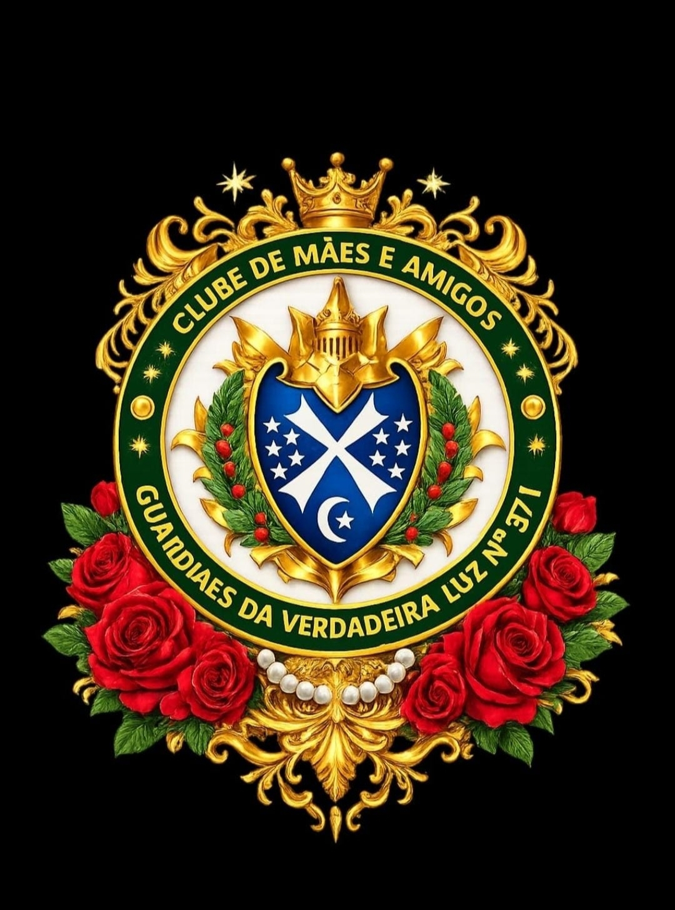

O interesse dos pais no bem-estar dos filhos inspirou a ideia de organizar as mães, os pais e os amigos numa atividades única. Ao longo dos anos, as mães e pais provaram ser uma fonte de força para os Capítulos e uma adição real na equipe de liderança adulta.
Clubes de Mães e Amigos combinam as energias e talentos de mães e pais, tutores e padrastos. Trabalhando juntos, esses pais podem ajudar o Conselho Consultivo e o Capítulo.

O verdadeiros propósito dos clubes são cooperar, assistir o Capítulo e seus membros, servi-lo e fortalecer o interesse de cada membro na Ordem DeMolay.
O contato do Clube com o Capítulo se dá através do Presidente do Conselho e o Mestre Conselheiro. Cada Clube esta sujeito à autoridade do Conselho Consultivo, de modo que as suas atividades devem ser definidas em conjunto.
Os Clubes de Mães e Amigos geralmente têm cuidado da comida para depois das reuniões e atividades sociais. Contudo, há outras formas de como um Clube pode proporcionar serviço a um Capítulo:
- ✓ Incentivar os DeMolays a assistirem as Reuniões do Capítulo.
- ✓ Estimular interesse em outras atividades.
- ✓ Adquirir vários itens para o Capítulo para tornar as atividades dos Capítulos mais agradável e produtiva.
- ✓ Limpar e reparar os paramentos do Capítulo.
- ✓ Auxiliar os membros nos gastos dos Conclaves e Conferências de Treinamento de Lideranças.
- ✓ Responsabilizar-se pelas medalhas ou prêmios para competições jurisdicionais ou locais.
- ✓ Providenciar entretenimento nas atividades regulares.
Clube de Mães e Amigos
 |
Nome do Clube: Tia Marjorie Fróes nº. 29
Capítulo DeMolay Patrocinador: Filhos das Águas nº. 926 Data de Fundação: 16/12/2016 Data de Instalação: 16/12/2016 Primeira(o) Presidente: Sem Informação Atual Presidente: Sem Informação Atual Mandato: Sem Informação |
 |
Nome do Clube: Amazonas nº. 57
Capítulo DeMolay Patrocinador: Ajuricaba/Amazonas nº. 263 Data de Fundação: 21/09/2017 Data de Instalação: 07/10/2017 Primeira(o) Presidente: Sem Informação Atual Presidente: Sem Informação Atual Mandato: Sem Informação |
|
Nome do Clube: Guardiãs das Esmeraldas nº. 262
Capítulo DeMolay Patrocinador: Filhos do Verde Amazônico nº. 43 Data de Fundação: 17/11/2019 Data de Instalação: 01/12/2019 Primeira(o) Presidente: Sem Informação Atual Presidente: Sem Informação Atual Mandato: Sem Informação |
 |
Nome do Clube: Guardiãs da Verdadeira Luz nº. 371
Capítulo DeMolay Patrocinador: Cavaleiros da Verdadeira Luz nº. 1200 Data de Fundação: 04/02/2023 Data de Instalação: 22/04/2023 Primeira(o) Presidente: Sem Informação Atual Presidente: Sem Informação Atual Mandato: Sem Informação |
|
Nome do Clube: Cidade de Manaus - Rosimar Bezerra nº. 403
Capítulo DeMolay Patrocinador: Cidade de Manaus nº. 26 Data de Fundação: 05/08/2023 Data de Instalação: 13/01/2024 Primeira(o) Presidente: Sem Informação Atual Presidente: Sem Informação Atual Mandato: Sem Informação |
|
Nome do Clube: Estrelas da Esperança nº. 424
Capítulo DeMolay Patrocinador: Unidos Na Esperança nº. 29 Data de Fundação: 06/04/2024 Data de Instalação: 10/05/2024 Primeira(o) Presidente: Sem Informação Atual Presidente: Sem Informação Atual Mandato: Sem Informação |
|
Nome do Clube: Primeira Virtude nº. 429
Capítulo DeMolay Patrocinador: Forte de Ega nº. 1186 Data de Fundação: 20/04/2024 Data de Instalação: 15/06/2024 Primeira(o) Presidente: Sem Informação Atual Presidente: Sem Informação Atual Mandato: Sem Informação |